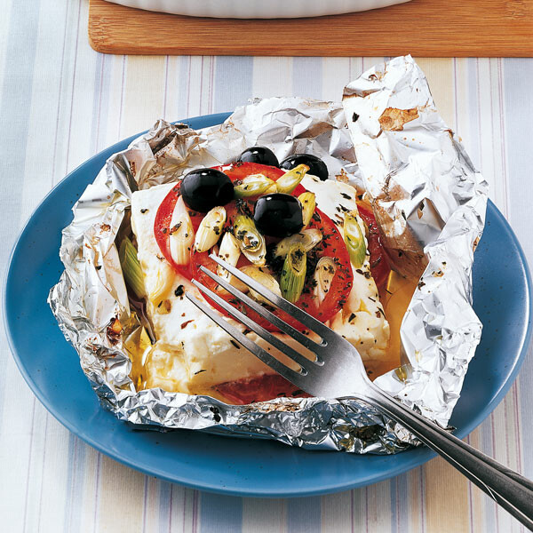

Ofenfeta

Beschreibung
Ja ist halt Ofenfeta was soll man sagen
Eig ganz lecker so aber bisschen schäbig
vor Allem bei mehrmals wöchentlichem Verzehr
Zutaten
- 1 Laib Feta (wenn ihr euch was gönnen wollt den Guten von Salakis / Patros mit Kräutern)
- Je besser das Olivenöl desto besser das Gericht
- Diverse Kräuter (ich hab so ne spezielle Schafskäse Mischung - fetzt)
- Diverses Gemüse - Paprika beliebt, von mir verhasst
- Tomaten sind 1 Muss
- Knoblauch
- Alufolie ist essential
Zubereitung
- Ja Ofen vorheizen normal Umluft 180 Grad whatever
- Stück Alufolie ausbreiten, Mitte ölen
- Feta drauf, öl den Käse
- Kräuter drüber
- 1-2 Knoblauch-Zehen drücken, schälen, kleinhacken und über der Alufolieund dem Käselaib verteilen
- Tomaten schneiden und verteilen
- Restliches Gemüse verteilen
- Alufolie zufalten, rein in den Ofen
- Schon so 20 min in den Ofen, damit er weich wird
- Dazu passt Brötchen. Ciabbata, Baguette, was man halt da hat
- Bis speta feta.